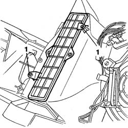
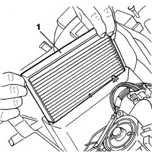
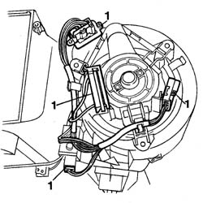
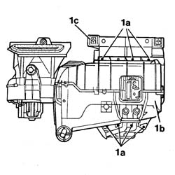
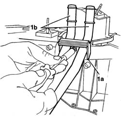
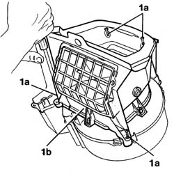
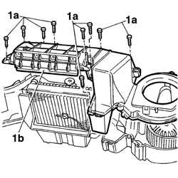
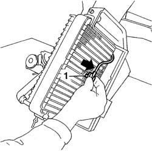
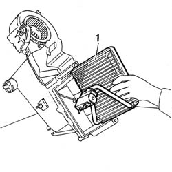
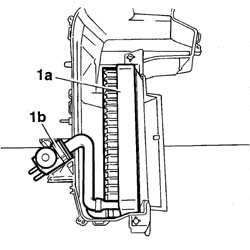

5040C66 air conditioner evaporator - r+r with air conditioner box removed
- Path
- Procedures > 50 AUXILIARY UNITS > 5040 AIR CONDITIONING CASING AND COMPONENTS > 5040C air conditioner box and components > 5040C66 air conditioner evaporator - r+r with air conditioner box removed
- Kind
- repair procedure (removal / refitting; the operation number is the code)
- Applies to
- all engines; all production periods
- Interactive page
- https://sloeber94.github.io/elrnDB-fDbl/en/#/2584845
Applies to: all engines; all production periods
 Removing
Removing
 Refitting
Refitting1. Undo the bolts securing the cleaning filter (pollen filter).

Applies to: all engines; all production periods
1. Undo and remove the cleaning filter (pollen filter) element.

Applies to: all engines; all production periods
1. Undo and release the wiring from the retainers and disconnect the electrical connections.

Applies to: all engines; all production periods
1. Undo the bolts (1a) and separate the evaporator casing (1b) from the heater casing (1c).

Applies to: all engines; all production periods
1. Undo the bolt and remove the bracket (1a) securing the evaporator assembly hoses (1b).

Applies to: all engines; all production periods
1. Undo the four retaining bolts (1a) and remove intake casing (1b).

Applies to: all engines; all production periods
1. Undo the bolts (1a) and remove the cover (1b).

Applies to: all engines; all production periods
1. Remove the frost sensor from the evaporator.

Applies to: all engines; all production periods
1. Remove the evaporator.

Applies to: all engines; all production periods
Refitting
RemovingCheck that the components are not damaged.
1. Fit the evaporator (1a) and position gasket (1b).

Applies to: all engines; all production periods
Position the frost sensor on the evaporator.
Position the cover and fix it using the bolts.
Position the inlet casing and fix it using the bolts.
Fit the pipe mounting bracket and fix it using the bolt.
Join the heater casing to the evaporator casing and tighten the bolts.
Secure the electrical wiring to the retaining bands and connect the electrical connections.
Refit the pollen filter.